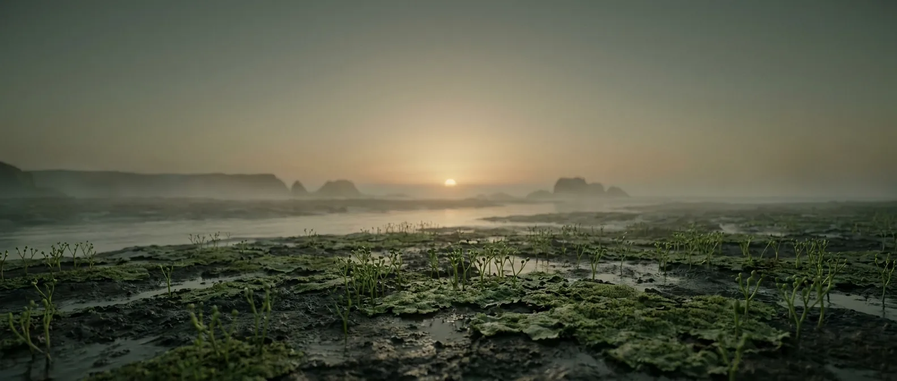
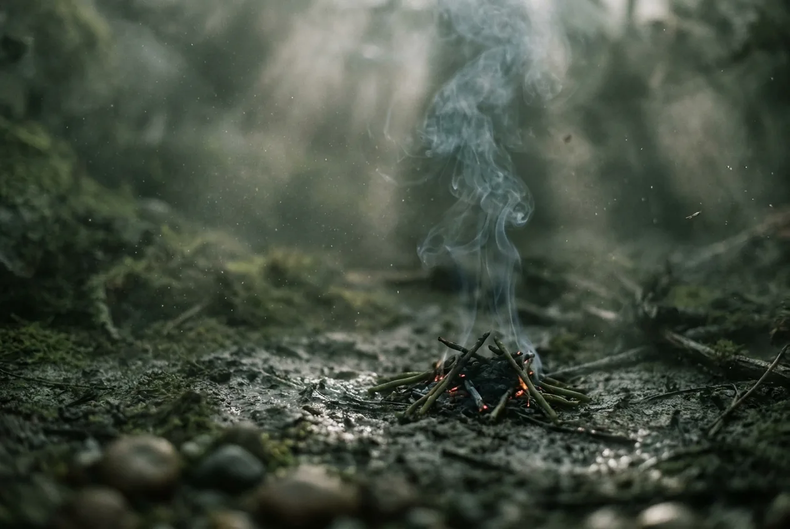
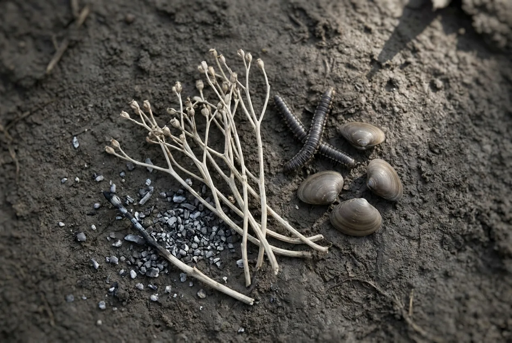

Short, warm and quietly the most important interval on this list. Plants evolve stiff water-carrying tissue and stand up for the first time. They are ankle-high and leafless, and they change your prospects more than anything in the previous four billion years.
Because you can finally make fire. Dry vascular stems burn, which means warmth, cooked food, boiled water and dry clothing. Every one of those was the thing killing you in the two intervals before this.

Scale 0–40%. Right at the threshold where combustion becomes self-sustaining. That coincidence is why this interval, not an earlier one, is where fire starts.
Scale 0–30 m. Small, but the key change is internal: lignin and water-conducting cells. Stiff stems can dry out without collapsing, and dry stems burn.
The oldest charcoal in the fossil record is Silurian, from around 420 Ma. Wildfire, and therefore campfire, becomes physically possible for the first time in Earth's history.
Scale −20 to 250 °C. Warm and unusually stable after the Hirnantian ice retreats. Among the gentlest climates on this site.
Scale 0–24 h. About 405 days per year.
Scale 0–30 m. Sea scorpions are the biggest arthropods that have ever existed. They are aquatic, so they are a reason to stay out of estuaries, not a reason to stay indoors.

The single largest jump in survivability anywhere on this site, and it comes from plants you could mow with your hand. Dried Cooksonia stems and mats take a spark. Everything else on this page follows from that.
Cooking roughly doubles the usable energy you get out of shellfish. Drying out at night stops the slow calorie bleed that ended the Cambrian and Ordovician. You are no longer running a deficit.
Millipedes, early arachnids and other small arthropods are on land now, in numbers. Poor calories individually, but they are the first food you can gather without getting wet.
Nothing on land is edible. Every calorie comes from animals, and the fat comes from the sea. You are eating well by the standards of this list and still slowly losing.
Humans cannot synthesise vitamin C, and a diet of arthropods and shellfish is thin in it. Symptoms begin at around 8 to 12 weeks without a source. The Silurian is where you start needing plants for reasons other than fuel.
Two months is the honest number, and it is four times the Cambrian for one reason.

Comfortable. Around 15%, roughly a 2,500 m mountain town.
Rivers and rain, and now you can boil it. Not that anything in it can infect you.
Marine, plus land arthropods. Jawed fish are radiating, and fish are the best calories available.
Yes. The first entry on this site where that word is not a refusal.
Rock plus dried plant matting. Crude, but it sheds rain and holds heat.
Scarce. The main thing standing between two months and a year.